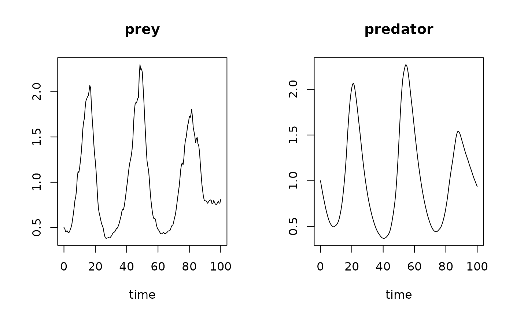
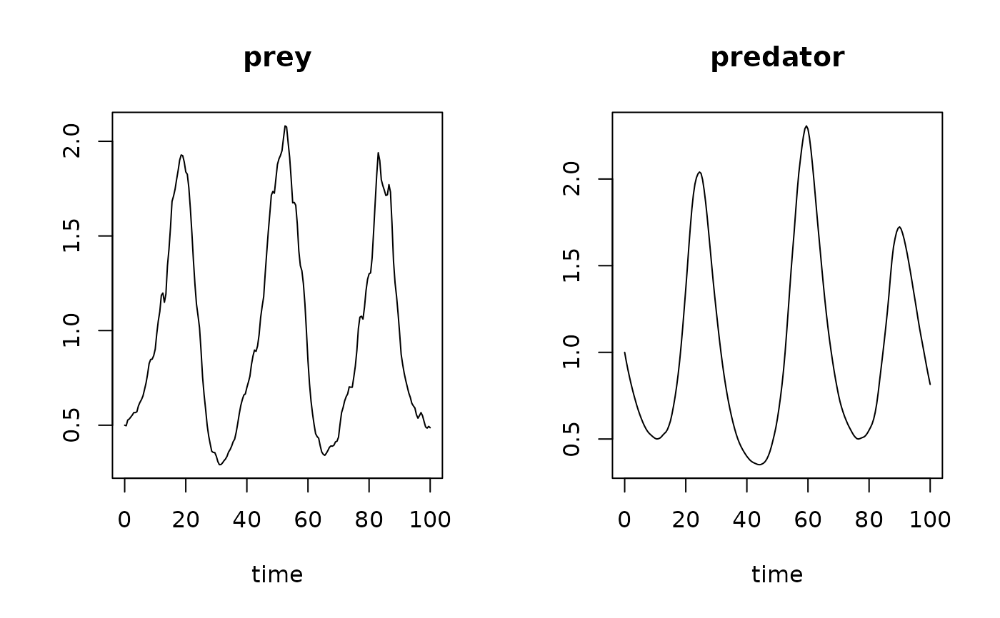
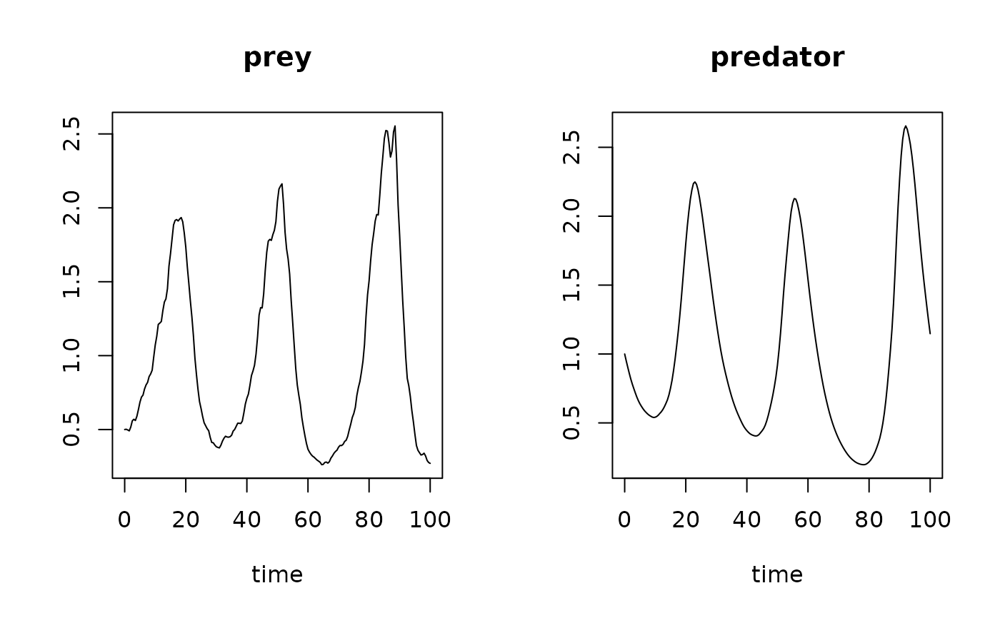

Methods for Function `initialize' in Package `simecol'
initialize-methods.RdThis function is used to initialize objects derived from the
simObj superclass, it is by default automatically called during
object creation and by sim.
Usage
# S4 method for class 'simObj'
initialize(.Object, ...)Arguments
- .Object
simObjinstance which is to be re-initialized.- ...
provided for compatibility with the default method of
initialize, or slots of the object which is to be created (in case ofnew).
Methods
- .Object = "ANY"
Generic function: see
new.- .Object = "simObj"
The
initializefunction is normally called implicitly bynewto create new objects. It may also be called explicitly to return a cloned and re-initialized object.The simecol version of
initializeprovides an additonal mechanism to call a user specified function provided in theinitfunslot of asimObjinstance that can perform computations during the object creation process. Theinitfuncmust haveobjas its only argument and must return the modified version of thisobj, see examples below. As a side effect end to ensure consistency,initializeclears outputs stored in slotoutfrom former simulations.
Examples
## Note: new calls initialize and initialize calls initfunc(obj)
lv_efr <- new("odeModel",
main = function (time, init, parms, ...) {
x <- init
p <- parms
S <- approxTime1(inputs, time, rule=2)["s.in"]
dx1 <- S * p["k1"] * x[1] - p["k2"] * x[1] * x[2]
dx2 <- - p["k3"] * x[2] + p["k2"] * x[1] * x[2]
list(c(dx1, dx2))
},
parms = c(k1=0.2, k2=0.2, k3=0.2),
times = c(from=0, to=100, by=0.5),
init = c(prey=0.5, predator=1),
solver = "lsoda",
initfunc = function(obj) {
tt <- fromtoby(times(obj))
inputs(obj) <- as.matrix(data.frame(
time = tt,
s.in = pmax(rnorm(tt, mean=1, sd=0.5), 0)
))
obj
}
)
plot(sim(lv_efr)) # initialize called automatically

plot(sim(lv_efr)) # automatic initialization, different figure

lv_efr<- initialize(lv_efr) # re-initialize manually
plot(sim(lv_efr, initialize = FALSE)) # simulation with that configuration
